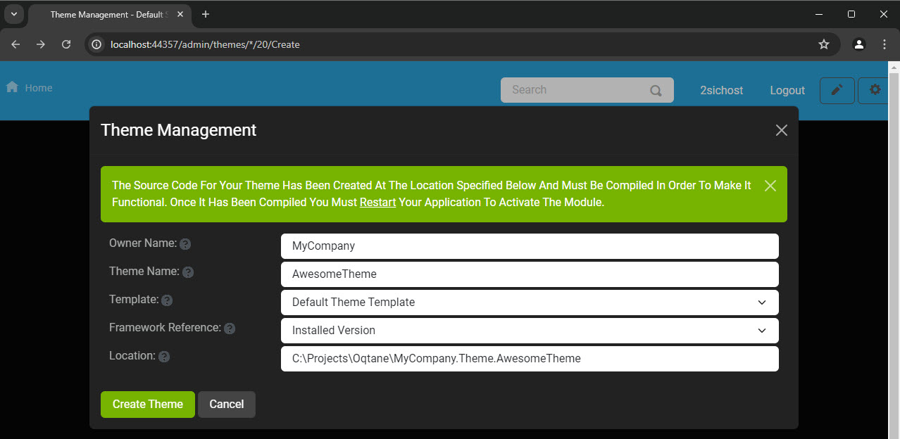
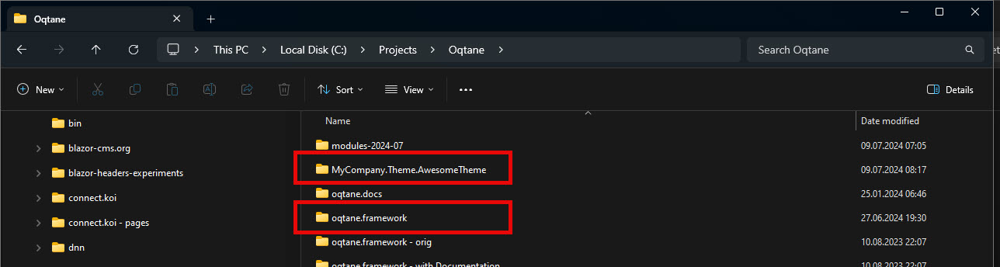
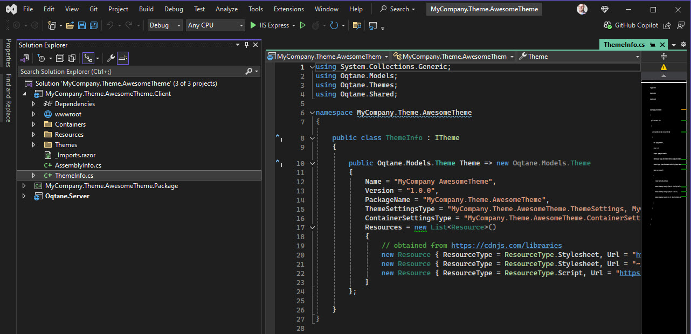
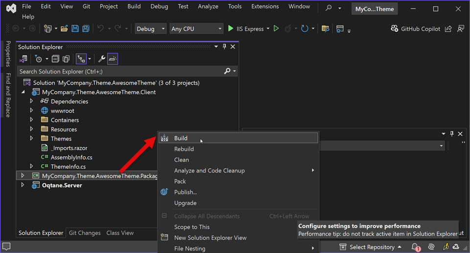

Oqtane Themes Generator
Brief tutorial how to use the built-in Themes Generator.
Oqtane helps you get started with themes by providing a built-in Themes generator. It will create a Visual Studio solution for you, containing all the necessary parts to start customizing your own theme.
Start the Generator
In your Oqtane site, go to /admin/themes to see the Themes management:

Click on "Create Theme" and fill in the wizard as follows:

- Owner Name should be your company name or similar. It will be used in the Namespace of the generated code.
- Theme Name will be the technical name of the theme. It too will be used in the Namespace of your generated code.
- Template is meant to select from various templates, but as of now there is only one.
- Framework Reference is to decide what Oqtane (not .net Framework) your Theme will target, but as of now you can always only select the current framework running on your Oqtane.
- Location is where the generated code will be placed. It is best practice to put this side-by side to your Oqtane solution.
Once you click on Create Theme you will see:
Continue in Visual Studio
The generator created this folder with a visual studio solution beside your Oqtane Framework folder:
Next, open the solution file in that folder:

You will now see 3 solutions according to best-practices:
Build/Rebuild the Package Solution
Build the Package solution to compile and copy the files to the Oqtane installation.
Then start/restart Oqtane - see how to restart Oqtane.
You should now see your new theme in the /system/themes section:
You're all set
That's it - you can start building / customizing your own theme now.
Remember to read more about: